Figure 1

Riemann for Anti-Dummies Part 51
THE POWER OF NUMBER
Nicholas of Cusa begins "On Learned Ignorance", by reaching back to the method of Pythagoras:
"Therefore, every inquiry proceeds through proportion, whether an easy or difficult one. Hence, the infinite qua infinite, is unknown; for it escapes all proportion. But since proportion indicates an agreement in some one respect and, at the same time, indicates an otherness, it cannot be understood independently of number. Accordingly, number encompasses all things related proportionally. Therefore, number, which is a necessary condition of proportion, is present not only in quantity but also in all things which in any manner whatsoever can agree or differ either substantially or accidentally. Perhaps for this reason Pythagoras deemed all things to be constituted and understood through the power of numbers."
Here, Cusa adopts the view of Plato, that numbers arise from the inseparable interaction between the human mind and the physical universe. The mind expresses the concepts it creates, about the principles it discovers, through the power of numbers. These concepts themselves become objects of the mind's investigation, and the relationships among these "thought-objects", also give rise to concepts, which are themselves expressible through the power of number.
Numbers in and of themselves have no power. They are like ironies that point, by inversion, to the principles that govern the physical universe. Those principles don't exist in the numbers. They exist "behind" the numbers. Thus, the significance of Cusa's reference that the Pythagoreans deemed all things to be {constituted and understood} through the power of numbers.
Against Cusa's understanding of Pythagoras is the far different fraud perpetrated by the Sophists who, then and now, insist on separating the conjoined idea {constituted and understood}. For them, as for Aristotle, how things are {constituted}, and how things are {understood}, are two separate and mutually exclusive actions. In his "Metaphysics", Aristotle attacks both Plato and the Pythagoreans for their insistence that ideas are an active principle in the Universe:
"But the lauded characteristics of numbers, and the contraries of these, and generally the mathematical relations, as some describe them, making them causes of nature, seem, when we inspect them in this way, to vanish; for none of them is a cause in any of the senses that have been distinguished in reference to the first principles. In a sense, however, they make it plain that goodness belongs to numbers, and that the odd, the straight, the square, the potencies of certain numbers, are in the column of the beautiful. For the seasons and a particular kind of number go together; and the other agreements that they collect from the theorems of mathematics all have this meaning. Hence they are like coincidences. For they are accidents..."
Aristotle's method is pure sophistry. As Cusa and Plato both indicate, number arises in the {human} mind through the effort to discover the unseen universal principles that govern the world behind the senses. Thus, the power of numbers is {deliberate}, not accidental. However, Aristotle plays the trick of separating the world of mind and the world of matter, and so, for him, any connection between number and the physical world is purely accidental.
But Aristotle does not have clean hands. He is the hired-gun who provides the oligarchy with the method it needs, to create the cultural basis it requires, to assume its arbitrary authority over humanity. By introducing this false separation between the universe of sensible things, the unseen principles that govern them, and the thoughts by which we understand those principles, Aristotle excises human cognition as an active principle from the Universe. Once cleansed of cognition, he creates a false universe, indifferent to the power of human thought, unknowable, and governed by mysterious forces accessible only to those with access to special incantations, such as the moans of the oracles of ancient Delphi, or the formulas of formal mathematics.
That is the form of sophistry from which Cusa rescued civilization.
This is not an arcane technical argument, but one that goes to the heart of the difference between man and beast.
As Cusa stated this explicitly in "On Conjectures":
"The natural sprouting origin of the rational art is number; indeed, beings which possess no intellect, such as animals, do not count. Number is nothing other than unfolded rationality...
"...we conjecture symbolically from the rational numbers of our mind in respect to the real ineffable numbers of the divine Mind, we indeed say that number is the prime exemplar of things in the mind of the Composer, just as the number arising from our rationality is the exemplar of the imaginal world."
Cusa's view was later adopted by Leibniz, who wrote in "Reflections on the Souls of Beasts":
"However, lest we seem to equate man and beast too closely, it should be known that there is an enormous difference between the perception of humans and beasts. For besides the lowest degree of perception that is found even in insensible creatures, and (as been explained) a middle degree which we call sensation and acknowledge in beasts, there is a certain higher degree which we call thought. But thought is perception joined with reason, which beasts so far as we can observe do not have.
"...However, a human being, insofar as he does not act empirically but rationally, does not rely solely on experience, or a posteriori inductions from particular cases, but proceeds a priori on the basis of reasons. And this is the difference between a geometer, or one trained in analysis, and an ordinary user of arithmetic, teaching children, who learn arithmetical rules by rote, but do not know the reason for them, and consequently cannot decide questions that depart from what they are used to: such is the difference between the empirical and the rational, between the inferences of beasts and the reasoning of human beings....Thus, brutes (as far as we can observe) do not acquire knowledge of the universality of propositions, because they do not understand the ground of necessity. And even if empirics are sometimes led by inductions to universally true propositions, this nonetheless happens only accidentally, not by force of entailment."
Creating Number
This concept of number is what Gauss had in mind when, provoked by the paradoxes associated with the "Kepler Problem", he sought the discovery of those hitherto unknown higher transcendentals indicated by Kepler's discovery. Gauss recognized, in the tradition of the Pythagoreans, Plato, Cusa and Leibniz, that these new numbers, like all numbers, cannot be defined by any set of formal, deductive rules, such as in the methods of Aristotle, or his philosophical protege, the Leibniz-hating Euler. Rather, Gauss understood that these new transcendentals, like all numbers, could only by defined by {inversion} with respect to a physical process.
To illustrate this point, take a case you think you are familiar with, and look at it, as Gauss did, from an entirely new standpoint: the number associated with the relationship of two squares whose areas are in the proportion 1:2, which is sometimes called, "the square root of two".
Construct a square from a circle. Now construct a square whose area is double. How do you know the areas of these two squares are in the proportion 1:2? Not by looking at them. There is nothing in the visible appearance of the two squares from which you can {know} the proportion of their areas. You can know this only from the method of construction, as Plato discusses that method in the Meno dialogue.
Now, look at the diagonal and the side of the square. These look the same. Both are lines. There is nothing in the visible appearance of these lines from which you can {know} their proportion, other than to say one is a little longer than the other. Yet, the Pythagoreans {proved} that the two lines are {incommensurable}, or in other words, had no common measure. This incommensurability cannot be demonstrated from the visible appearance of the lines, but, only, as the Pythagoreans did, by investigating the relationship itself between magnitudes that are commensurable in length and those commensurable as squares. The Pythagoreans showed that no linear proportion could possibly exist, whose square is in the proportion 1:2. (See Jason Ross article Fall 2003 21st Century.).
Most importantly, this characteristic of incommensurability is independent of the actual size of the squares. It depends only on the proportion between their areas, which is determined only by construction. As such, this incommensurability expresses a characteristic of the physical process of the construction of the squares. Consequently, the number called "the square root of 2", cannot be defined by any set of rules, definitions or procedures such as a logical deductive method, but only by an inversion, as {that which expresses the principle with the power to generate two squares whose areas are in the proportion 1:2}.
In the visible domain, we proceeded in the opposite manner. We constructed the squares and produced the magnitude called, "the square root of two". But from the standpoint of physical principles, it is the incommensurability of the magnitude called the square root of two which expresses the {power} (possibility) to produce two squares whose areas are in the proportion 1:2.
As Thales, Pythagoras, Theodorus, and Theatetus, further demonstrated, the square root of two is merely a special case of a more general species of relationships generated from circular action, which they called one geometric mean between two extremes. (See Figure 1.) As point P moves from A to O, the length of the line QP will always be the geometric mean between the lengths of line OQ and QA. When OQ is one half of QA, then QP is the magnitude called "the square root of 2".
Figure 1 |
The particular proportion is independent of the size of the circle or the actual lengths of the lines. It depends solely on the position of P with respect to A and O, the which is determined by the circular "orbit" on which P travels. Thus, the circular "orbit" on which P travels produces, as a whole, a complete "type" or "species" of proportions, with respect to the magnitudes OQ, QP and QA.
This is one of the simplest examples of the Greek method of the geometry of position ("topos") known today by the Latin word, "loci", in which proportions are understood as generated from some physical action.
Another famous example of this method of loci is Archytas's construction of cubic magnitudes. Here, an entirely new species of magnitudes is generated by combining two degrees of circular rotation orthogonal to each other, producing the torus and cylinder whose intersection defines a different "orbit" on which P travels. Again, these relationships are dependant only on the characteristic of the "orbit", not on the size of the circles, or the surfaces generated from them.
The solid loci, or conics, of Menaechmus and Apollonius, follows the same principle, of generating both square and cubic magnitudes from {action acting on action}.
But here we seem to have run into a boundary. The change in the motion that generates one mean between two extremes (squares) to the motion that generates two means (cubes), was effected by introducing a second degree of circular action acting orthogonally to the first. Visible space, however, does not permit the addition of a third degree of circular action acting orthogonally to these two. Does that mean that no higher powers are possible? And, if they are possible, how are they manifest physically, as distinct from some formal mathematical algebraic definition?
Ultimately, it was Leibniz's discovery of the catenary principle that demonstrated the physical existence of these higher powers. But that discovery rested on a previous one by Cusa, which is necessary to review for the sake of the subject matter to follow.
Look again at the generation of geometric means from circular action, but this time from the standpoint of inversion. As was demonstrated above, the circular "orbit" of P generates the entire species of geometric means. But what about the inverse? Can the entire species of geometric means produce a circle?
Cusa demonstrated that the answer was no, that, in fact, there exists a higher principle that generates the circle, which Leibniz later called, "transcendental". These "circular transcendentals" are identified with those interrelated magnitudes known as trigonometric functions, and the relationships among them express the incommensurability between the curved and the straight. (See Figure 2.)
Figure 2 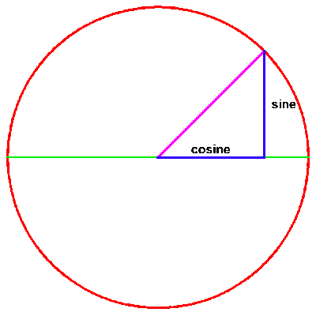 |
As Cusa showed, this incommensurability between the curved and the straight, is a different type than the incommensurability expressed by squares or cubes, and, the higher "algebraic" powers. Later, Leibniz, through his discovery of the catenary principle and its relationship to natural logarithms, demonstrated that all species of algebraic powers are generated by these transcendental functions, and it is these transcendental magnitudes, not the algebraic, that express the relationships that arise in the physical universe.
It is crucial to restate this point in this form:{ The transcendental functions, not the algebraic, are those functions that are inverse to circular rotation}. The significance of this statement will become more clear from the standpoint of the discovery of the higher, elliptical functions, by Gauss and Riemann.
Elliptical Functions From Kepler to Leibniz
Through his education by E.A.W. Zimmerman and A.G. Kaestner, both leading defenders of Leibniz and Kepler, Gauss was focused, from his early adolescence, to investigate the implications of the paradoxes arising from the "Kepler Problem" that were left unresolved by Leibniz's invention of the infinitesimal calculus. (See Riemann for Anti-Dummies, Part 49, Aug. 16, 2003.)
As Kepler demonstrated, the ellipticity of a planetary orbit demanded a new type of geometry of position, one that expressed the position of the planet as a function of the characteristic of change of the orbit as a whole. Kepler's effort to develop this concept resulted in his famous principle of equal areas. He recognized that in every interval of an elliptical orbit, no matter how small, the motion of the planet at the beginning of that interval is different than at the end. The only interval excepted is one entire orbital period. In that case, the planet is doing the same thing at the beginning and end of the interval. Thus, Kepler made the entire orbit the primary interval of action, and measured the planet's intermediate motion as portions of the whole orbit.
In The New Astronomy, Kepler, citing Archimedes, measures this relationship by the proportion of the total area of the planet's orbit, to the area swept out in a given interval. He defines the area swept out by the planet as the "sum" of the infinite number of radial distances:
{"For the whole sum of the radial distances is, to the whole periodic time, as any partial sum of the distances is to its corresponding time."}
For Kepler, the planet's motion was thus measured by the changing proportion between the part of the orbit and the whole. This proportion, Kepler understood to be the "time-elapsed" within any given interval.
It is extremely important to recognize the difference between Kepler's actual principle and the Newtonian-algebraic formulation, misidentified as "Kepler's second-law", and stated in text-book gossip circles as: "the planet sweeps out equal areas in equal times". This historically and epistemologically false characterization is a clinical example of an Aristotlean-type sophistry in two important ways. First, it falsely characterizes Kepler's discovered principle as a mathematical "law", thereby excising out the cognitive action. Second, by stating this law in the form of a proportion between area and time, it transforms time and space, by fiat definition, into independent absolute magnitudes. In this way, the Universe is turned on its head. Instead of recognizing the characteristics of space and time as functions of the physical motion of the planet, the fantasy pseudo-world of absolute time and space is held to define the planet's motion.
Responding to Kepler's demand for a generalization of his principle, Leibniz developed the infinitesimal calculus, by extending Kepler's proportionality between the part and the whole, into infinitesimal intervals of action.
For Leibniz, the infinitesimal is physically determined as a proportionality, as Cusa understood proportionality, between the inseparable part and whole of a physical process. His critics reacted by reaching back to the ancient sophistries of the Eleatics, and, like Zeno, posed the paradoxes of physical motion from the standpoint of an arbitrary formal mathematical definition of a curve. Leibniz defended himself from these attacks during his lifetime, but after his death, the oligarchy recruited Euler to give a more "academic" imprimatur to these attacks, as expressed most blatantly in his Letters to a German Princess.
In response to Euler, Leibniz was posthumously defended, on precisely this point, by those who were fighting to establish the American Republic against the oligarchy that employed Euler, most notably by A.G. Kaestner. (See Appended essay by Kaestner, Moral from the History of the Infinitesimal Calculus.)
Elliptical Functions of Gauss
Ironically, while Leibniz's discovery of the catenary principle demonstrated the power of his infinitesimal calculus, its application to the elliptical orbit, the problem that had provoked its invention, led to the paradox known as the "Kepler Problem". The essential characteristics of this paradox can be understood by investigating the difference between a circular orbit and an elliptical one from the standpoint of Kepler and Leibniz.
In a circular orbit the area swept out can be measured directly by the angle. In the elliptical orbit, as Kepler showed, the area swept out is measured by a circular sector and a rectilinear triangle. (See Figures 3).
Figure 3 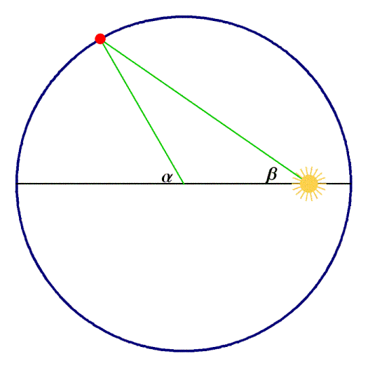 |
The incommensurability between the triangle and the circular sector leads to the "Kepler Problem". (See Figure 4.)
Figure 4 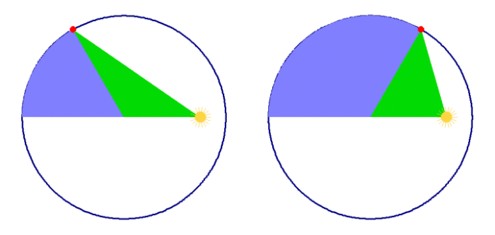 |
Gauss recognized that this paradox arose from the effort to measure the elliptical action of the planet by circular functions. The problem here was that while the circular functions reflect the incommensurability between the arc and the line, in elliptical action there exists an incommensurability between the arc and the angle as well. (See Figure 5.) Gauss realized that since these two types of incommensurability were connected, both arising from a unified elliptical action, there must exist a new, more general type of elliptical transcendental, of which the circular functions were only a special case. The complex domain was required to make intelligible the relationships associated with these new transcendentals.
Figure 5 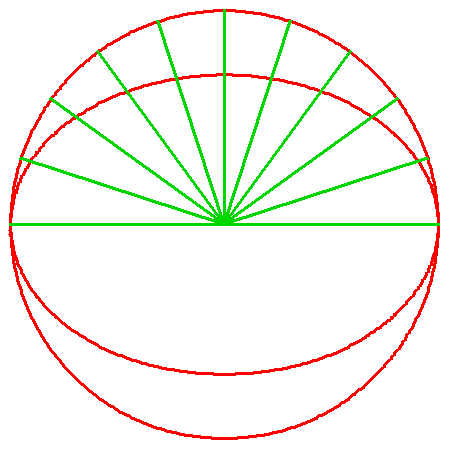 |
This investigation forms the core of Gauss's youthful work, as a review of his early notebooks and correspondence reveals. Gauss presented some aspects of these discoveries more formally in his 1799 new proof of the Fundamental Theorem of Algebra and his Disquisitiones Arithmeticae, as well as his later works in astronomy, geodesy, and curvature. But because of the tyranny imposed on Europe in the post-1789 reaction to the American Revolution, (especially after the 1799 consolidation of Napoleon's rise to power and its aftermath) some of these discoveries were never published, and only found their expression in the work of the next generation of scientists, most notably, Dirichlet, Riemann, Abel, and Jacobi, who were themselves influenced by Gauss, and the Leibnizian networks with which Kaestner was associated, such as the Humboldts, Schiller, Herbart et al.
Because of this fragmentary nature of Gauss's early writings, much of Gauss's thinking is expressed in abbreviated form. It becomes pedagogically much easier, therefore, to present the nature of his discovery, from the standpoint of his later work on curvature and Riemann's elaboration of those ideas, most notably, in his famous treatise on Abelian functions. As in Gauss's 1799 proof of the fundamental theorem of algebra, both Gauss and Riemann indicated the superiority of geometrical construction to algebraic formulas for conveying ideas.
The crux of Gauss's method was that of the ancient Greeks, Cusa, Kepler and Leibniz: that nothing could be known from the visible manifestation of the circle or the ellipse. Rather, these visible characteristics, such as the uniformity or non-uniformity of the arcs, were a function of some underlying principle. That principle, however, was not visible, and could only be discovered by inversion. In other words, those principles could not be seen, but could be known, as, that which produces the visible characteristics of curvature.
To illustrate Gauss' inverse method geometrically, take a new look at the trigonometric relationships. In the visible domain, the trigonometric relationships are generated as an effect of circular motion. But, as Cusa indicated (for which Kepler called him "divine"), the harmonic characteristics are found not in circular action alone, but in the incommensurability between the curved and the straight. Thus, Gauss thought of uniform circular motion as being merely the visible artifact of the more complex motion associated with circular functions.
This is illustrated in the accompanying animations. In animation 1, the circular rotation generates the trigonometric relationships. Animation 2 illustrates the inverse, where the visible effect of the circle is created as an artifact of the movement of the cosine and sine. In the visible domain, this seems impossible. How can you know the relationship of the cosine to the sine without first drawing the circle? But in the domain of reason, the essential nature of the sine and cosine can be {known} by inversion, as those functional relationships that produce circular areas.
Animation 1 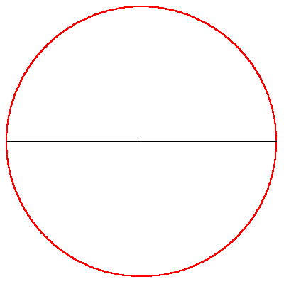 |
Animation 2 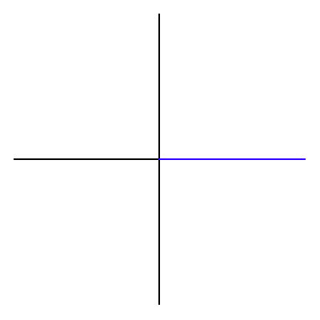 |
In the case of the circle, this method may seem a bit arcane and clumsy, and so it was resisted by virtually every scientific thinker of Gauss's time. But Gauss recognized that this method of inversion, rooted in the method of the ancient Greeks, was required to discover the nature of the elliptical transcendentals. For because of the incommensurability of the arc to both the line and angle, there was no way to generate, from the visible characteristics of an ellipse, a characteristic elliptical function, and all efforts to measure elliptical motion from circular transcendentals failed.
Gauss posed the elliptical problem in exactly these terms. He {knew} the higher elliptical functions must exist, and that they could not be defined directly. "What characteristics must such functions have to produce the ever changing elliptical motion?" Gauss can be imagined to have asked. "How can such characteristics be made intelligible?" This is the only way these functions can become known. Not directly, but only as that which is inverse to elliptical motion.
This thought will undoubtedly provoke psychological resistance in the modern reader, steeped in the culture of Aristotle and empiricism, who so strongly desires logical proofs presented in the visible domain. But it is the method of all Classical science and Classical art. It requires the mind to move; to willfully create new concepts. Hence, the benefit of reliving Gauss's true discovery.
When the algebraists, such as Euler, Lagrange, et al. had tried to express the elliptical motion using their formalized, non-physical and, therefore, false version of the calculus they produced a formal representation of the elliptical motion that defied all their efforts at calculation. Gauss flanked them all by focusing on the simplest such case, the lemniscate of Bernoulli, which had been shown to be a special case of an elliptical type non-uniform curve.
Gauss's choice of flank was rooted in Kepler's insight into conic sections. Kepler had generalized Apollonius's conics by recognizing the projective relationship among the conic sections as a whole. (See Hyperbolic Functions: A Fugue Across 25 Centuries.). Kepler had shown, by inversion, that all conic sections were generated by a single principle. However, he made particular notice of the significance of the discontinuity in the visible manifestation of this principle, expressed as an infinite boundary between the circle/ellipse and the hyperbola.
It was Gauss's insight that the lemniscate expressed the higher, unified, principle that generated the conic sections. In its projected, visible form, the lemniscate is the locus of positions in which the product of the distances from a point on the curve to two foci, is equal to the square of « the distance between those foci. (See Figure 6.). Or, in other words, the distance from one focus to the center of the lemniscate is the geometric mean between the two distances from the curve to each of the foci respectively.
Figure 6 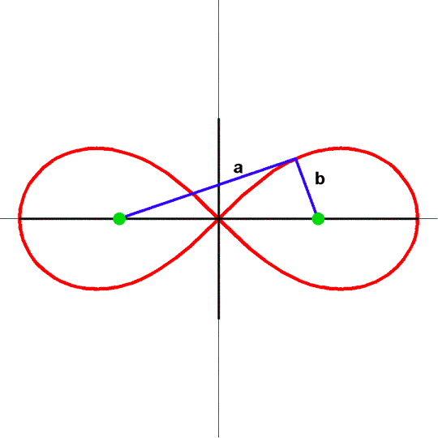 |
However, the lemniscate has a more general relationship to the generating principle of the conic sections, and to the elliptical functions in particular, that can be grasped intuitively from the higher standpoint of Gauss and Riemann. On the one hand, the lemniscate can be generated as the inversion of the hyperbola in a circle. (See Figure 7.)
Figure 7 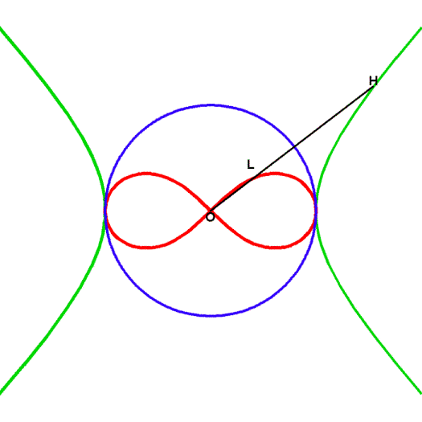 |
From this more advanced standpoint, the hyperbola can be seen as the stereographic projection from a sphere onto a plane of a lemniscate. (See Figure 8)
Figure 8 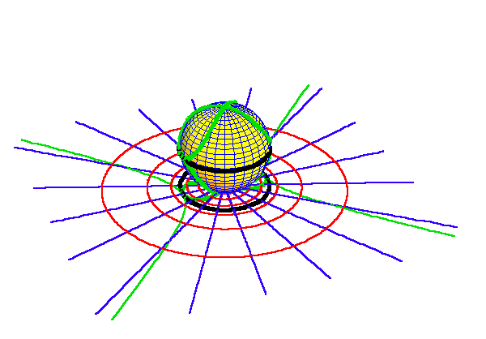 |
Here we can begin to see emerge the essential characteristics of the elliptical transcendentals, from the standpoint of Gauss's principles of curvature. (See On Principles and Powers, Fidelio, Summer 2003.) The lemniscate on a sphere is generated as a mapping of the transition between the sections of positive and negative curvature of a torus. (See Figure 9.) And as Riemann would later demonstrate, the torus expresses a different topology (geometry of position) than the sphere or the ellipsoid. On the sphere or ellipsoid any closed curve separates the surface into two parts. But this is not the case on the torus where there are two distinct types of pathways, one around the torus, and the other through the "hole". This characteristic, Riemann showed, expressed the double periodicity of the elliptical functions. (See Figure 10.)
Figure 9 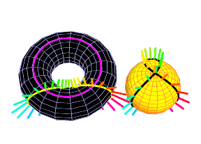 |
Figure 10 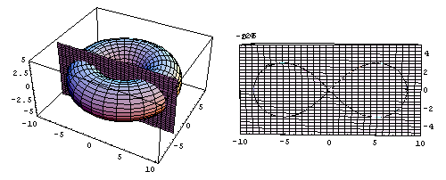 |
Thus, enfolded in the lemniscate, and also in the ellipse, is the characteristic of double periodicity which is unfolded in the form of the torus. Additionally, hidden in the torus, if cut in the right way, one finds, the lemnsicate.
Here is the geometry of position that establishes the unseen, but nevertheless real, "orbit" which exists behind the elliptical functions.
We will come back to this discussion in future installments of this series. But for now, from this high perch, look back to Archytas with a justified sense of happiness.
Appendix
Moral from the History of the Infinitesimal Calculus
by A.G. Kaestner
When the question of calculating the infinite first arose, the most famous mathematical wise men had an aversion to it. Their habitual methods of discovering mathematical truths appeared to them to be clear and secure; whereas with the new one, they found dark secrets, much that was uncertain, and in the main, a degree of subtlety which they would rather forgo.
To convert these scorners, a cure was supplied by the camp of Leibniz and his friends, roughly as follows:
It was demonstrated that the calculation of the infinite was in agreement with all prevailing customary theories, in that it easily and comfortably led to truths which previously could only be attained by tiresome cogitation, and, finally, because it enlarged hitherto existing knowledge, such that the summit of Archimedes' discovery was its lowest boundary; with it, one could answer, in total completeness, questions which could only be answered incompletely, or not at all, by the previously known feats of mathematical skill. And thus, the calculation of the infinite won the respect of an eye which, even without it, had made so many, so great discoveries.
How much would the Christian faith not gain, if its followers were to show, through their own acts, that with regard to the exercise of virtue, it has the same superiority over every other religion, as makes a Christian deserving of being admired by Socrates?
But many of these followers, and even their teachers, strike me today like someone who would go around constantly spouting higher mathematics and dropping Euler's name, and who would declare anyone who could not integrate to be a dunce, but who would personally make errors as frequently as he was asked to calculate a Rule of Three!
{kind=link}
{kind=link}
{kind=link}
{kind=link}
{kind=link}
{kind=link}
{kind=link}
{kind=link}
{kind=link}
{kind=link}
{kind=link}